Stitch / local · 5 routes × 5 widths Source mockup imagery and fictional claims are reference only. Approved content, common chrome and withheld photos differ. Image exceptions are not a visual PASS.
home · 390px Original Stitch HTML Local implementation
private · 390px Original Stitch HTML Local implementation
education · 390px Original Stitch HTML Local implementation
about · 390px Original Stitch HTML Local implementation
spomove · 390px Original Stitch HTML Local implementation
home · 768px Original Stitch HTML 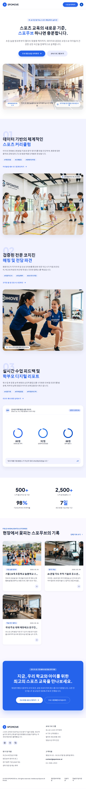
Local implementation private · 768px Original Stitch HTML 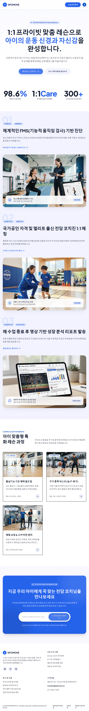
Local implementation education · 768px Original Stitch HTML 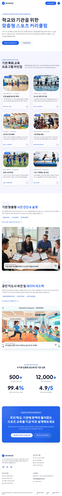
Local implementation about · 768px Original Stitch HTML 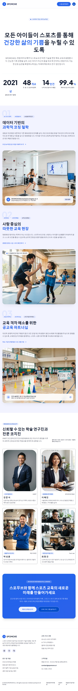
Local implementation spomove · 768px Original Stitch HTML 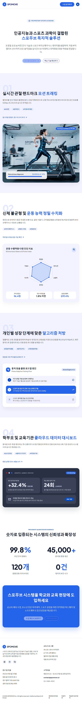
Local implementation home · 1024px Original Stitch HTML 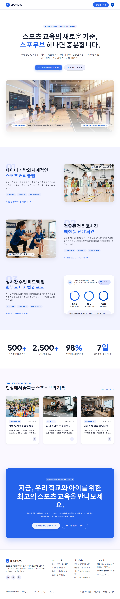
Local implementation 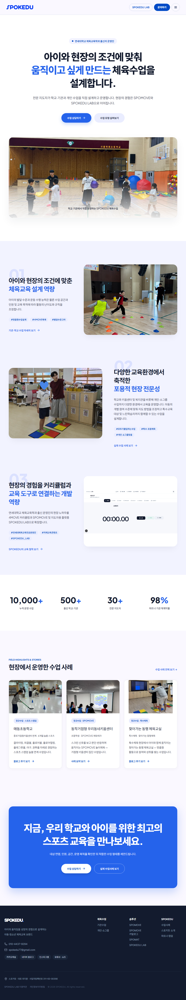
private · 1024px Original Stitch HTML 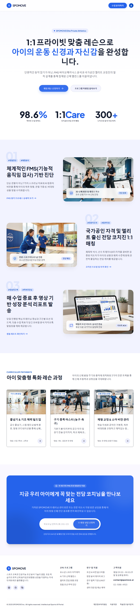
Local implementation education · 1024px Original Stitch HTML Local implementation
about · 1024px Original Stitch HTML 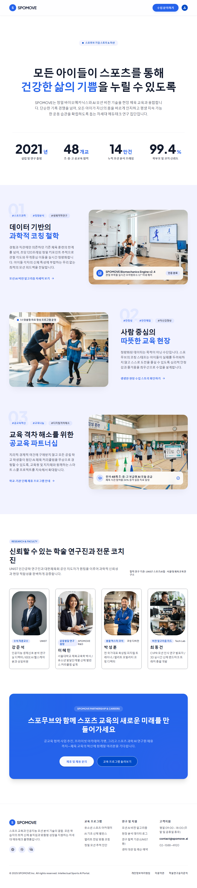
Local implementation spomove · 1024px Original Stitch HTML 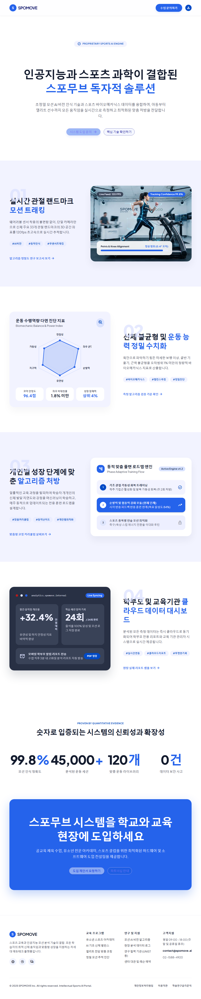
Local implementation 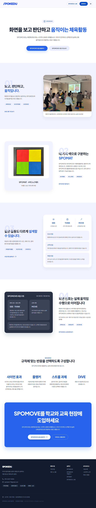
home · 1440px Original Stitch HTML 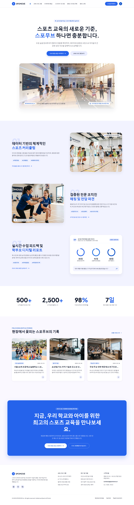
Local implementation 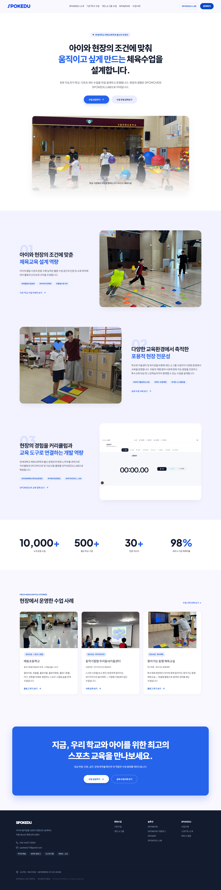
private · 1440px Original Stitch HTML 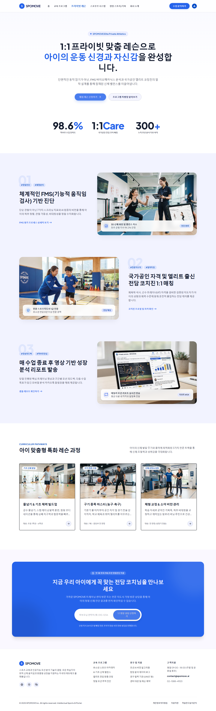
Local implementation 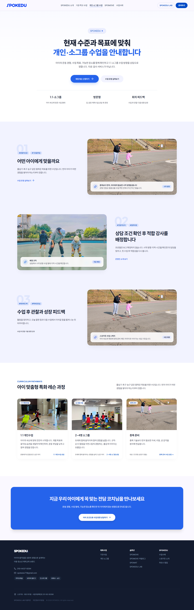
education · 1440px Original Stitch HTML 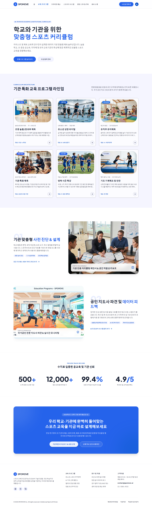
Local implementation 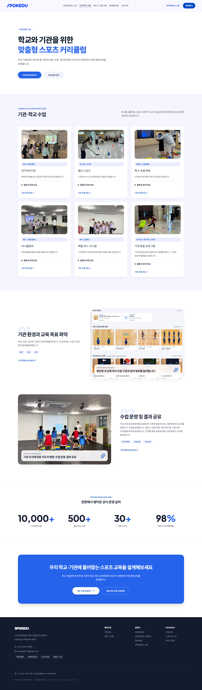
about · 1440px Original Stitch HTML 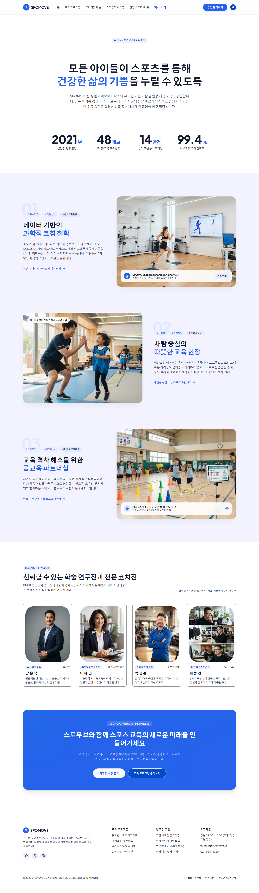
Local implementation 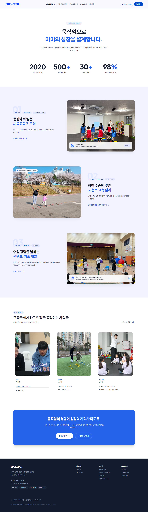
spomove · 1440px Original Stitch HTML 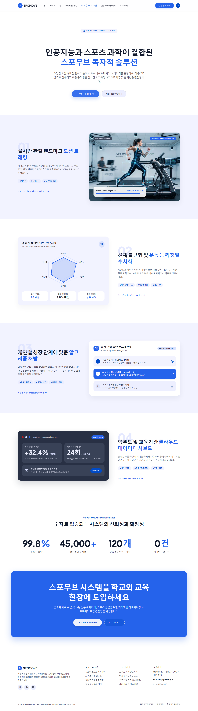
Local implementation 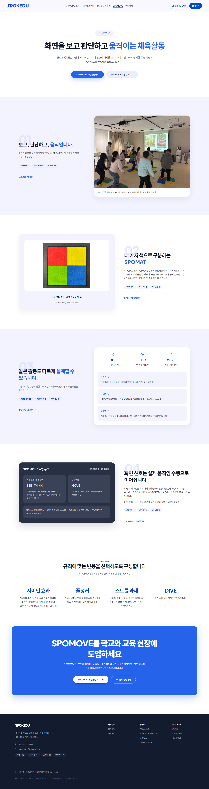
home · 1920px Original Stitch HTML Local implementation 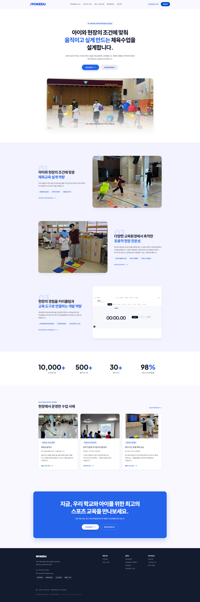
private · 1920px Original Stitch HTML 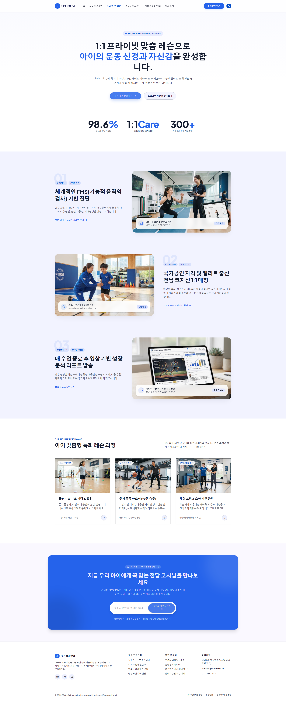
Local implementation 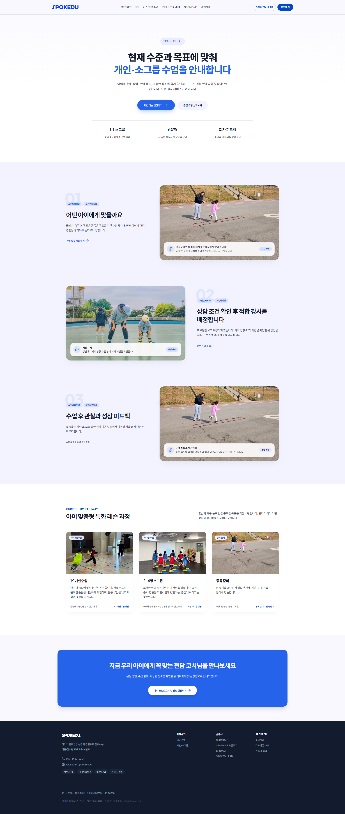
education · 1920px Original Stitch HTML 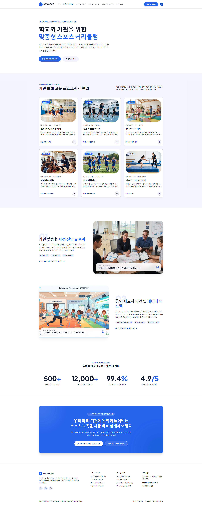
Local implementation 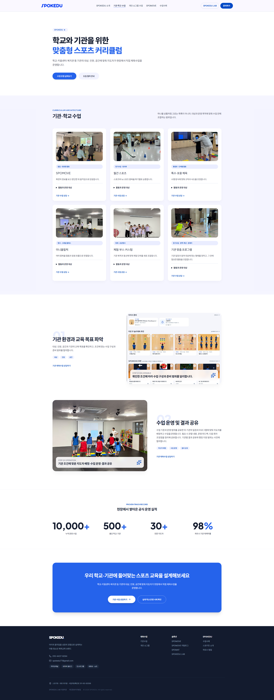
about · 1920px Original Stitch HTML Local implementation 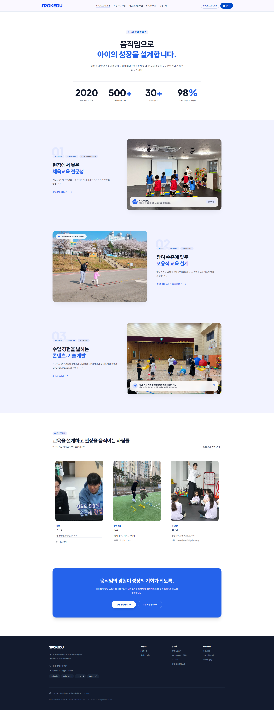
spomove · 1920px Original Stitch HTML 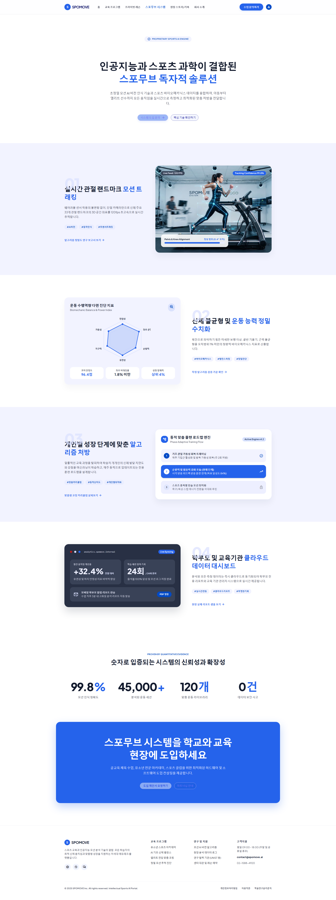
Local implementation 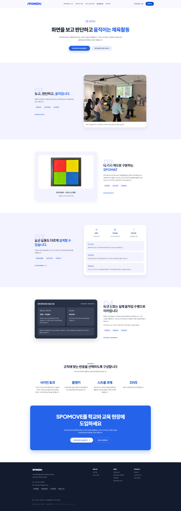